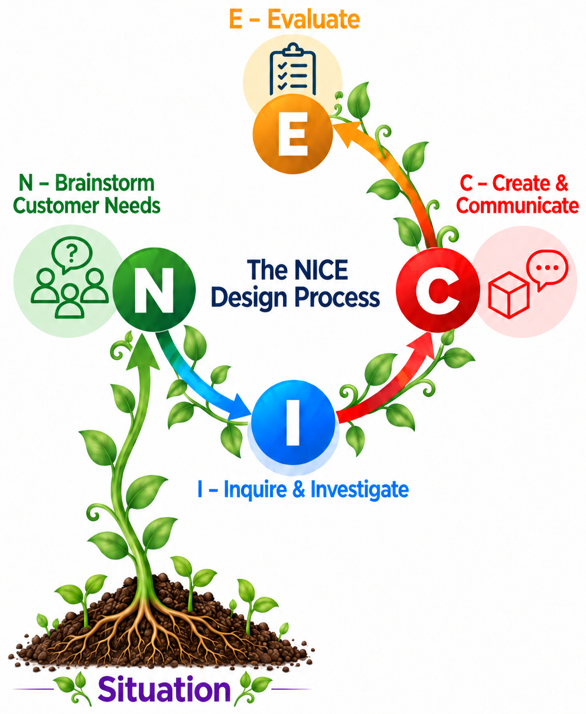

1. Understand the Situation
Separate facts, assumptions, and interpretations before defining the problem.
A clear situation prevents a team from solving the wrong problem.
The N.I.C.E. process keeps the user and the evidence in view from the first question to the next version. Use the matching worksheet beside the step where you need it.

Showing 7 lessons.
Separate facts, assumptions, and interpretations before defining the problem.
A clear situation prevents a team from solving the wrong problem.
Observe and record what people actually need in the setting.
Evidence about users guides safer and more useful designs.
Separate non-negotiable constraints from preferences.
The distinction keeps safety and function visible when trade-offs appear.
Rank preferences so the most valuable improvements stay visible.
Priorities help a team compare ideas without treating every wish as equal.
Research, observe, measure, collect precedents, and generate several ideas.
Investigation replaces guesses with evidence and expands the possible solutions.
Develop an idea, make the proposal understandable, pitch it, and collect feedback.
Clear communication lets other people test, question, and improve a proposal.
Score ideas against necessities and priorities, then revise the strongest option.
Evaluation turns feedback and test results into defensible improvements.
No lessons match these filters.